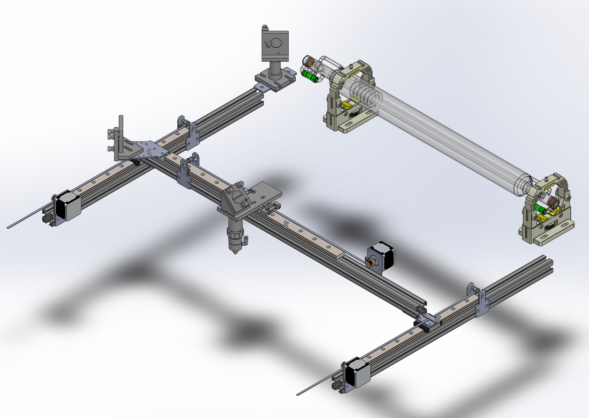

Week 07
Computer-Controlled Machining
Group assignment
- test runout, alignment, speeds, feeds, and toolpaths for your machine
Individual assignment
- Make something big (on a CNC machine).
Learning outcomes:
- Demonstrate 2D design development for CNC production
- Describe workflows for CNC production
Have you:
- Explained how you made your files for machining (2D or 3D)
- Shown how you made something BIG (setting up the machine, using fixings, testing joints, adjusting feeds and speeds, depth of cut etc)
- Described problems and how you fixed them
- Included your design files and ‘hero shot’ photos of final object
Tools used
- large (2x3 meters) self-made CNC
Software Used
-
Group Assingment:
Test run-out alignment, speeds, feeds, and tool-paths for your machine
-
Introduction:
For this week I will manufacture an enclosure for the laser cutter I am building. I know it's a revelation I am not sure this laser cutter will be my final project or if I will stick with the egg incubator, but since I started building it let's go!

I will discuss how I designed the laser in detail in the Machine week but for this week suffice to say I did everything inside out following the path of the laser beam backwards, until I designed the X and Y frames. after that I decided to build an enclosure for it. I am very anxious start shooting but I decided on safety first.
-
Material:
I will be using 18mm OSB. Since I am building the laser as a prototype machine and I am going as cheap as possible. I will next to it during tests and as it is not a production machine also I am not worried of it caching on fire, I intend to replace the OSB as soon as possible.
-
Design requirements:
-
acrylic windows to alow supervision
-
enough clearance and access for maintainance.
-
emergency shutoff button
-
hole in the back for air exhaust
-
CAD:
The software useid in the design is Solidworks
-
CAM:
The CAM software used is ArtCAM